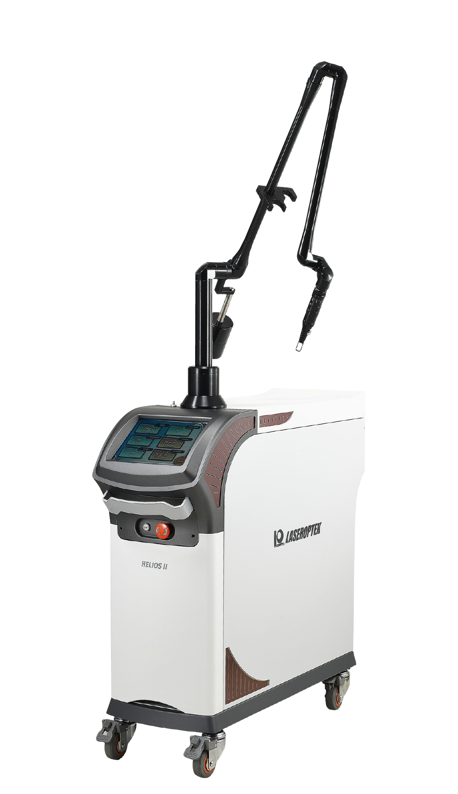
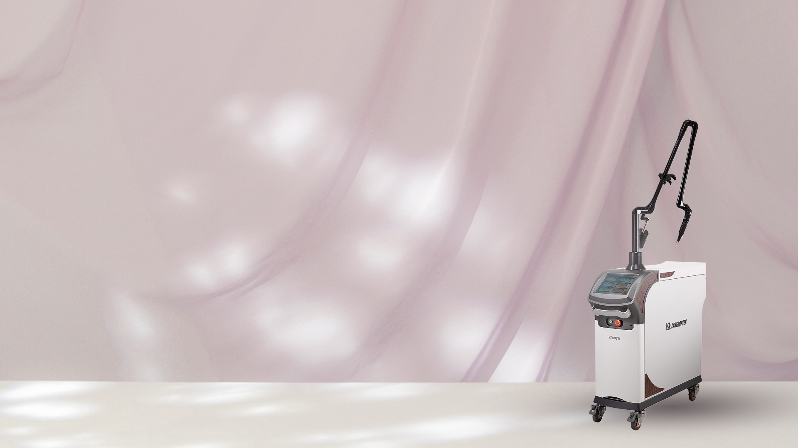

레이저 토닝
맑고 균일한 피부 톤을 위한 최적의 솔루션
Q-스위치 엔디야그 레이저 토닝 (Q-switched Nd:YAG) 기미, 주근깨, 잡티와 같은 색소 문제를 개선하고, 전반적인 피부톤 균일화에 효과적인 레이저 시술입니다. 색소질환뿐 아니라 피부 결과 탄력을 함께 개선할 수 있어 많은 사랑을 받는 대표적인 피부관리 시술입니다.


Q-스위치 엔디야그란?
Q-스위치 엔디야그 레이저는
멜라닌 색소를 표적화하여 분해하는 고도화된 기술을 활용합니다.
멜라닌 색소 분해 Q-스위치 엔디야그 레이저는 매우 짧은 시간 동안 높은 에너지를 전달해 얼룩덜룩한 피부 색소를 미세한 입자로 쪼갭니다.
이렇게 분해된 색소는 체내 대사 과정을 통해 자연스럽게 배출됩니다.
다양한 색소 문제를 해결하는 2가지 파장 ▶ 532nm 파장 주근깨, 잡티 등 옅고 얕은 색소층을 제거하는 데 효과적입니다.
▶ 1064nm 파장 기미, 진피형 색소침착 등 깊은 색소층을 완화하여 깨끗한 피부로 되돌려줍니다.
안전한 시술 환경 시술 과정에서는 멜라닌만 선택적으로 파괴하기 때문에 주변 피부조직에 대한 손상을 최소화합니다.
더불어 시술 후 피부 자극이 적어 회복이 빠르며, 휴식기 없이 일상생활에 즉시 복귀할 수 있습니다.

Q-스위치
엔디야그 레이저의 효과
01 색소 질환 개선 기미, 주근깨, 잡티 등 피부의 다양한 색소 문제를 효과적으로 제거하여 한층 깨끗하게 맑아진 얼굴 상태를 확인하실 수 있습니다.
02 피부결 및 피부톤 개선 레이저 자극이 콜라겐 생성을 유도하여 피부결을 부드럽게 만들고, 불균일한 피부톤을 고르게 정돈합니다.
03 피부 탄력 및 모공 개선 콜라겐 재생 효과로 피부의 탄력이 증가하며, 모공 크기를 감소시켜 보다 건강하고 젊은 피부를 제공합니다.
04 비침습적이고 효율적인 시술 멜라닌만 표적화하는 레이저 시술로 피부 자극이 적고, 별도의 회복 기간이 필요하지 않습니다.
Q-스위치 엔디야그 레이저 토닝의 장점
01
멜라닌 제거와 재발 방지 멜라닌 색소를 표적화하여 정확하게 제거하며, 스킨부스터를 함께 사용할 시 피부 색소 문제의 재발 가능성이 최소화됩니다.
02 부드럽고 균일한 피부 톤 레이저와 스킨부스터의 시너지를 통해 칙칙한 피부 톤을 개선하고, 매끄럽고 맑은 피부를 만들어줍니다.
03 짧은 회복 시간과 안전성 비침습적인 방식으로 피부 자극이 적어 시술 후 바로 일상생활이 가능합니다.
04 다목적 개선 효과 색소 문제뿐 아니라 모공 축소, 피부 탄력 증가, 주름 개선까지 다양한 피부 고민을 해결합니다.
메디컬블룸의 시너지
Q-스위치 엔디야그 레이저 토닝 X 스킨부스터
천연물 기반 스킨부스터로 확실히 끌어올리는 Q-스위치 엔디야그 레이저 토닝의 효과 PN 리빌더 T 폴리뉴클레오타이드(PN) 피부 세포 재생을 촉진하고 손상된 피부를 회복시킵니다.
천연물 추출 성분 피부 장벽을 강화하여 외부 자극으로부터 보호합니다.
레이저 시술 후 피부 자극을 완화하며 전반적인 피부 상태를 개선 하고, 탄력을 높여 더 건강하고 생기 있는 피부 를 제공합니다.
기미색소 컨택터 PDRN-PL 피부 재생을 돕고 염증을 완화합니다.
산삼 진세노사이드 Rg1 강력한 항산화 작용으로 피부를 보호하고, 색소 문제 재발을 방지합니다.
미강, 율피, 황매목 추출물 피부 톤을 맑게 하고, 붉은기를 가라앉힙니다.
레이저로 제거된 색소 부위를 빠르게 회복 시키며, 멜라닌 색소 합성을 억제하여 맑은 피부가 유지 되도록 돕습니다.
메디컬블룸에서는 Q-스위치 엔디야그 레이저와 천연물 기반 스킨부스터를 결합하여 보다 완벽한 피부 관리를 제공합니다.
Q-스위치 엔디야그 레이저 토닝 추천 대상
색소 문제로 고민하는 분
기미, 잡티, 주근깨 등 피부 색소 질환을 개선하고 싶은 분 피부톤과 결 개선이 필요한 분 칙칙한 피부톤과 거친 결로 고민하는 분 색소 재발을 방지하고 싶은 분 시술 효과를 오래 유지하고 싶으신 분 효과적인 저자극 케어를 원하는 분 비침습적이고 빠른 회복이 가능한 방법을 찾는 분
미리 확인하세요!
Q-스위치 엔디야그 레이저 토닝 시술 후 주의사항
1. 피부 보호 시술 후 1주일 동안 자외선 노출을 최소화하고, 선크림을 반드시 사용하세요.
2. 자극 피하기 스크럽제나 필링 제품 사용은 피하고, 부드러운 저자극 클렌저를 사용하세요.
3. 충분한 보습 유지 피부가 건조하지 않도록 보습제를 꾸준히 발라주세요.
가장 건강한 아름다움을 드릴
메디컬블룸한의원의 약속
1:1 피부 컨디션 & 디자인 상담
원장님과의 충분한 상담을 통해 개인의 고민 부위와 피부 컨디션, 피부 특성을 꼼꼼히 체크합니다. 고객님이 추구하는 아름다움과 얼굴 상태를 모두 고려하여 가장 알맞는 퍼스널 페이스 디자인을 제안해드립니다.
한의원장 2인의
특별한 전담관리
상담부터 시술까지 내 가족, 지인의 피부라 생각하며 누구보다 꼼꼼하고 섬세하게 관리합니다. 피부 미용에 한의학적 시선을 접목, 혈맥과 근육 자극을 더하여건강과 아름다움 모두를 달성합니다.
부작용 없는 건강한 아름다움
고객님의 피부 건강과 만족도를 가장 중요하게 여깁니다. 시술 후의 마음 아픈 부작용이 없도록 검사와 상담 단계에 만전을 기하며 약침과 한약의 재료는 우리 몸에 순한 천연 한약재만을 고집합니다.
정품 프리미엄 기기와
정량 시술
메디컬블룸이 고객님께 사용하는 모든 기기와 약품은 정품으로, 내 얼굴에 더하지도 덜하지도 않은 맞춤 정량으로만 시술합니다.